Switzerland / rifleA3005

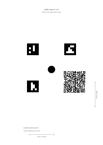
300 m rifle A
Five-point scoring
Practice distance7.5 m
Reference distance300 m

Edition notes
Compact marker and QR layout. Print both 50 mm calibration strips at their labelled size.
Swiss & American editions · OLTS 0.5
A collection of rifle and pistol targets for laser practice. Choose an edition, check its practice distance, and download the target with its scoring regions.
Each PDF includes the target first and its scoring companion second.

Five-point scoring
Compact marker and QR layout. Print both 50 mm calibration strips at their labelled size.
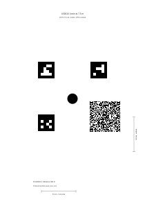
Ten-point scoring
Compact marker and QR layout. Print both 50 mm calibration strips at their labelled size.
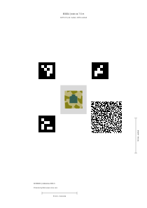
Four-point scoring
Compact marker and QR layout. Print both 50 mm calibration strips at their labelled size. Silhouette artwork is a preserved training trace.
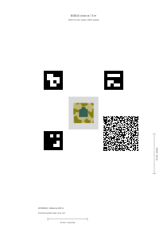
Ten-point scoring
Compact marker and QR layout. Print both 50 mm calibration strips at their labelled size. Silhouette artwork is a preserved training trace.
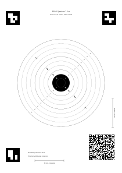
P10 · ten-point scoring
Print both 50 mm calibration strips at their labelled size.
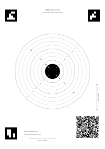
P4 · four-point scoring
Print both 50 mm calibration strips at their labelled size.
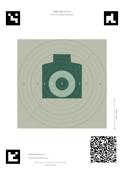
B5 · five-point scoring
Print both 50 mm calibration strips at their labelled size. Silhouette artwork is a preserved training trace.
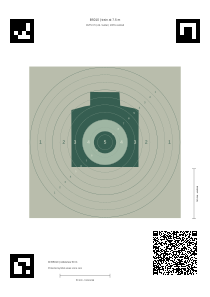
B10 · ten-point scoring
Print both 50 mm calibration strips at their labelled size. Silhouette artwork is a preserved training trace.
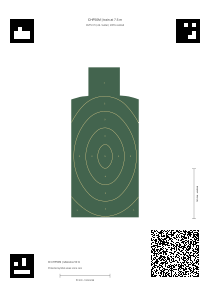
50 m · five-point scoring
Print both 50 mm calibration strips at their labelled size. Silhouette artwork is a preserved training trace.
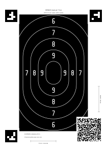
25 m reference · 7.5 m practice
Print both 50 mm calibration strips at their labelled size. The QR protection covers part of the outer six-zone; that protected portion scores zero.
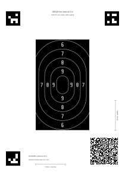
25 m reference · 5 m practice
Print both 50 mm calibration strips at their labelled size.
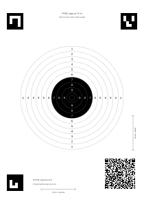
Ten-point scoring
Print both 50 mm calibration strips at their labelled size.
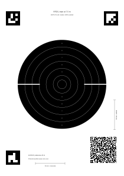
Six scoring zones · 5–10 points
Print both 50 mm calibration strips at their labelled size.
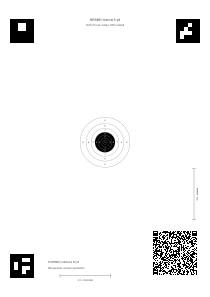
National Match Course · slow fire
Print both 2 in calibration strips at their labelled size. X ring displayed; its integer score is 10.
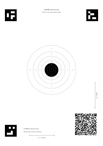
National Match Course · timed / rapid fire
Print both 2 in calibration strips at their labelled size. X ring displayed; its integer score is 10.
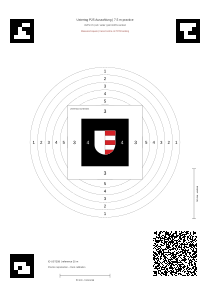
Repair centre on PP25 · 3–5 points
Print both 50 mm calibration strips at their labelled size. Measured repair centre on the PP25 backing. Outside the square scores zero; inner contours are traced.
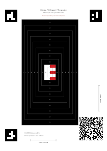
Nested rectangles · 1–10 points
Print both 50 mm calibration strips at their labelled size. Measured centre with extrapolated outer rectangles. Black background and white outer labels; practice reproduction.
No matching targets. Try another name or clear the filters.
The shared physical layout fits both. Centre the PDF on the selected paper; keep portrait orientation.
Choose 100% or “Actual size”. Turn off “Fit to page”. The practice distance assumes the printed dimensions are preserved.
Check horizontal and vertical tick spacing. Swiss sheets use 50 mm; the NRA editions use 2 inches. Print the downloaded PDF, not this web page.
Self-contained definitions
Each QR carries its scoring geometry and symbol positions. The rifle editions place the markers and QR close to the small target. White protected symbol regions score zero.
Using the collection
The individual PDFs contain two pages. The collection PDF contains only target pages, for convenient distribution. SVG files are vector originals; PDFs use high-resolution artwork with vector identification symbols.
The Swiss B and Morgarten silhouettes preserve traced training contours. NRA editions follow the published ring dimensions and are practice reproductions. Their X rings count as 10 in this format; separate X-count scoring is not encoded.
Physical print and camera tests remain necessary. The site is a downloadable catalogue; it does not install or update a target reader.